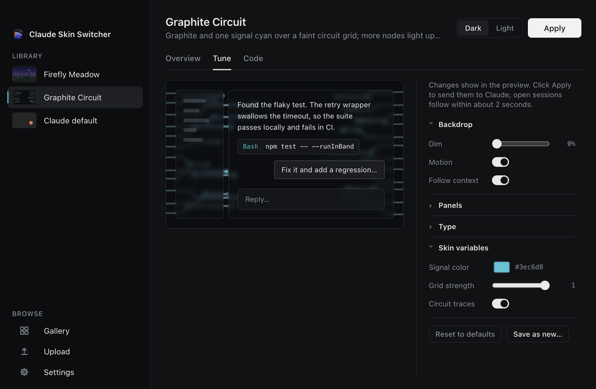
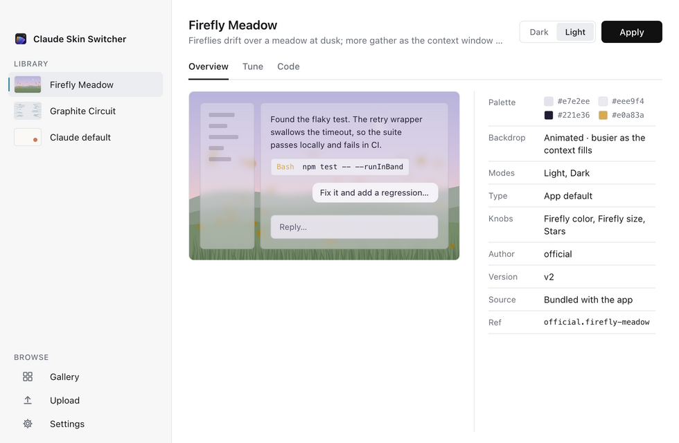
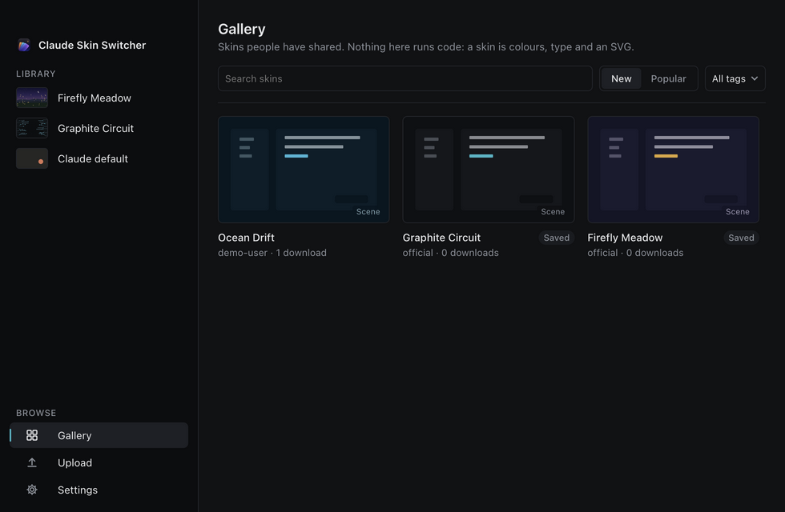
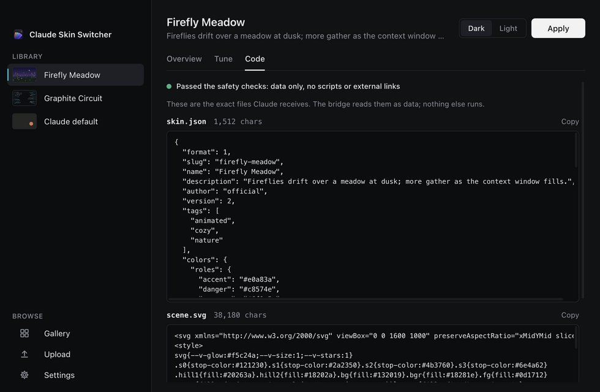
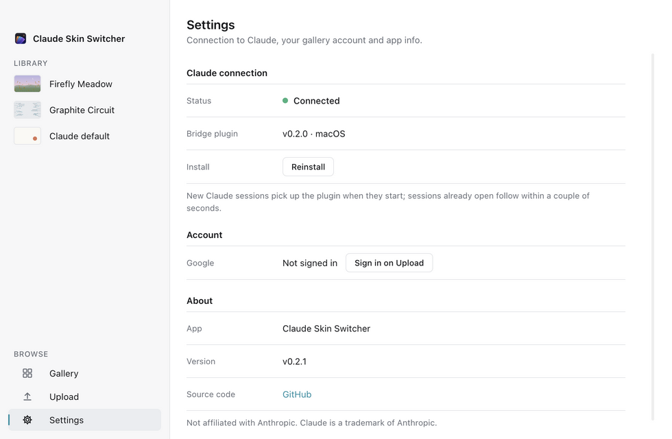

A skin library
Start with Firefly Meadow, Graphite Circuit or Claude's own default, and keep every skin you save from the gallery side by side.
Claude Skin Switcher reskins the Claude desktop app: colors, type, message style and an animated backdrop that comes alive as your context window fills. Tune it live, then share it with everyone.
macOS (Apple silicon)macOS (Intel)Windows

Pick a skin, adjust it with a live preview, apply it to Claude. Every open session follows within a couple of seconds.
Start with Firefly Meadow, Graphite Circuit or Claude's own default, and keep every skin you save from the gallery side by side.
Backdrop dim, motion, panel blur and opacity, accent color, text size and bubble radius, plus the knobs each skin declares, all with a live preview.
Animated backdrops grow busier as the conversation's context window fills: more fireflies gather, more circuit nodes light up. Or pin it to a fixed level.
Changes stay a draft that only the preview shows. Click Apply changes to send them to Claude, or Discard to throw them away.
Browse, search and filter skins by tag. The Code tab shows the exact skin.json and scene.svg before you save anything.
Tune a skin, choose Save as new, and upload it. Sign in with Google (the openid scope only) and publish under a public name you pick.




Live from the public gallery. Every skin is data only: a JSON file and an optional SVG backdrop.
Get it in the app. Skins are saved from inside Claude Skin Switcher: open Gallery, search for the name, check the Code tab if you like, then click Save to library and Apply. To share your own, tune a skin, choose Save as new…, then Upload.
The app installs a small Claude Code bridge plugin. The plugin is what actually draws your skin inside Claude.
Get the .dmg for macOS or the .exe for Windows from the latest release. The builds are not code-signed yet:
xattr -cr "/Applications/Claude Skin Switcher.app" once.In the app, open Settings and click Install next to the Claude connection. This adds the bridge plugin to Claude Code.
Start a new Claude session (sessions already open don't load new plugins), then pick a skin and click Apply. Open sessions follow within about 2 seconds, and Settings shows Connected.
~/.claude-theme-switcher/selection.json (see the README).
/plugin install theme-switcher --marketplace Bowen1314/claude-skin-switcherA skin is one skin.json and, optionally, one scene.svg. There is no place in it for JavaScript, a shell command, a plugin hook or a file path. The bridge that talks to Claude is fixed code from the repository; a skin only gives it values to fill in.
openid scope alone, so the gallery never sees your email or name.Free for macOS and Windows. Open source under the MIT license.